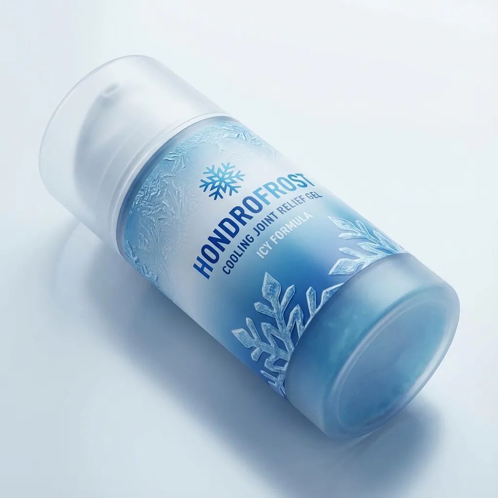
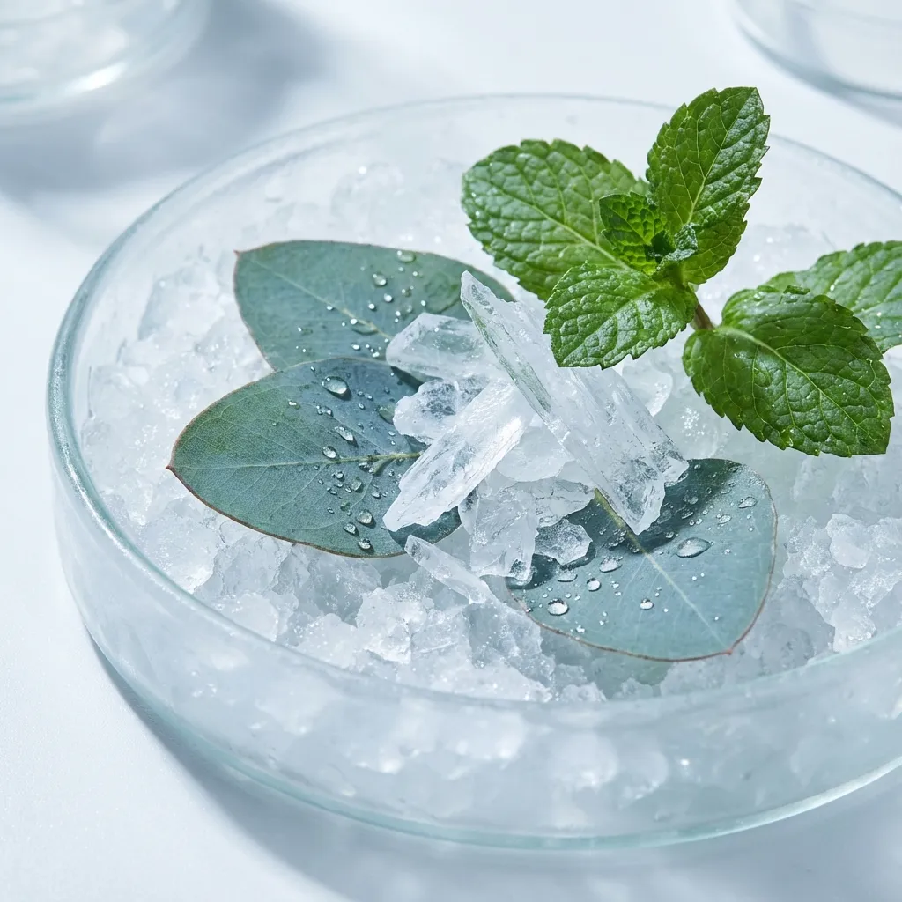

Hondrofrost: Gel Natural para el Cuidado Articular
Hondrofrost es un gel innovador diseñado específicamente para proporcionar alivio del dolor articular y muscular mediante ingredientes de origen natural. Este producto se ha convertido en una opción popular para personas que buscan alternativas más suaves a los medicamentos antiinflamatorios tradicionales.

¿Qué es Hondrofrost?
Hondrofrost es un gel de aplicación tópica formulado con extractos naturales y compuestos bioactivos que trabajan sinérgicamente para reducir la inflamación, aliviar el dolor y mejorar la movilidad articular. Su fórmula combina ingredientes tradicionales utilizados en la medicina natural con investigación científica moderna.
Ingredientes Principales y Beneficios
La efectividad de Hondrofrost radica en su composición cuidadosamente seleccionada de ingredientes naturales:
- Extractos de plantas medicinales: Proporcionan propiedades antiinflamatorias naturales
- Aceites esenciales: Mejoran la circulación y penetración del producto
- Compuestos activos naturales: Ayudan a regenerar el tejido conectivo
- Vitaminas y minerales: Nutren la piel y promueven la recuperación

Aplicaciones y Usos Recomendados
Hondrofrost está indicado para diversas condiciones relacionadas con las articulaciones y músculos. Es especialmente útil para personas que experimentan molestias debido a la edad, actividad deportiva intensa o condiciones crónicas como la artritis. El gel se puede aplicar en rodillas, codos, muñecas, hombros y cualquier otra articulación que presente molestias.
Para obtener los mejores resultados, se recomienda aplicar una pequeña cantidad de gel sobre la piel limpia y seca, masajeando suavemente hasta su completa absorción. La aplicación se puede repetir dos o tres veces al día, según sea necesario.
Complementos para la Salud Articular
Mientras que Hondrofrost trabaja externamente, es beneficioso complementar su uso con suplementos orales que apoyen la salud articular desde el interior. El Hondrodox y Hondro Sol son opciones que pueden proporcionar nutrientes esenciales para el cartílago y tejido conectivo.
Estilo de Vida Saludable para las Articulaciones
Además del uso de productos tópicos, mantener un estilo de vida saludable es fundamental para la salud articular a largo plazo. Esto incluye una alimentación balanceada rica en antiinflamatorios naturales, ejercicio regular de bajo impacto, y mantener un peso corporal saludable.
Los suplementos nutricionales como el triple magnesio pueden ser beneficiosos para la función muscular y articular, mientras que antioxidantes naturales presentes en alimentos como las hojas de ciertas plantas medicinales ayudan a combatir la inflamación.
Consideraciones Importantes
Aunque Hondrofrost es generalmente bien tolerado por ser de origen natural, es importante realizar una prueba de sensibilidad antes del primer uso aplicando una pequeña cantidad en el antebrazo. Las personas con piel muy sensible o alergias conocidas a plantas medicinales deben consultar con un profesional de la salud antes de usar el producto.
💚 Encuentra Hondrofrost en Amazon
Adquiere Hondrofrost y comienza a experimentar el alivio natural para tus articulaciones.
Ver Hondrofrost en Amazon →